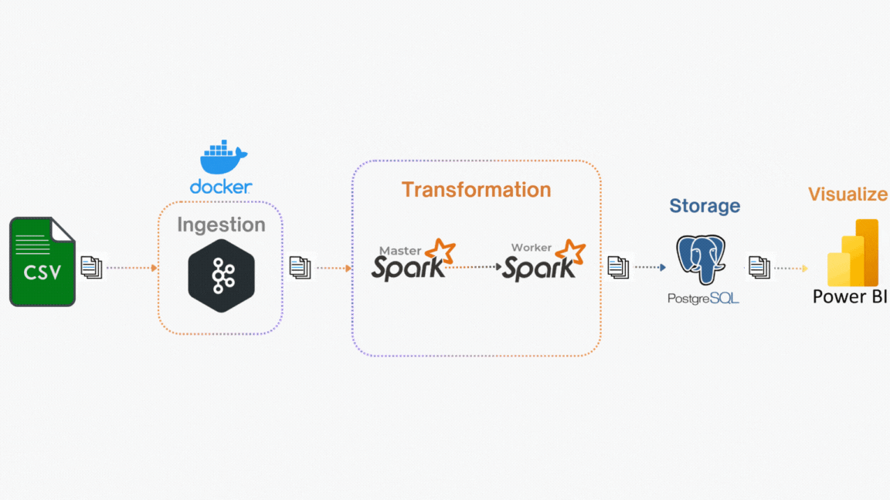

DOCUMENTATION
Overview
This project is an end-to-end ETL (Extract, Transform, Load) streaming data pipeline designed to handle real-time data processing. The pipeline ingests data from a CSV source, processes it through a distributed streaming framework, and stores it in a structured database for analysis and visualization.
For a step-by-step deployment guide, visit the Deployment. Happy coding!
System Architecture

The pipeline begins by ingesting data from a CSV file into a Kafka topic, enabling real-time event streaming. Spark Streaming then consumes the data, performing necessary transformations and analyses before storing it in PostgreSQL. The processed data is subsequently used to build interactive dashboards in Power BI, allowing for both real-time monitoring and historical data analysis.
Core Components
- Kafka: Serves as a message broker, efficiently streaming data from CSV files into Kafka topics.
- Spark Streaming: Handles real-time data processing and transformation before storing results in PostgreSQL.
- PostgreSQL: Acts as the structured data storage for processed information, supporting analytical queries.
- Power BI: Provides interactive dashboards for real-time and historical data visualization.
Technical Decisions
- Kafka: Selected for its capability to handle high-throughput real-time data streaming. Kafka's partitioning mechanism enables parallelism, ensuring scalability and fault tolerance.
- Spark Streaming: Chosen for its near real-time data processing capabilities with Spark Structured Streaming. By leveraging distributed computing, Spark efficiently processes large-scale streaming data with multiple executors and cores.
- PostgreSQL: Preferred over MySQL due to its superior analytical capabilities. While MySQL is optimized for high-speed writes, PostgreSQL is better suited for complex queries and analytical workloads.
- Power BI: Integrated seamlessly with PostgreSQL, making it an ideal choice for intuitive data visualization without requiring extensive additional configurations.
Technical Notes
Optimizing Resource Allocation
- Using a Single Executor: Due to limited CPU and memory resources, a fat executor approach is used—allocating all available resources to a single executor. With 10 cores, each core receives 500MB of memory, optimizing data processing efficiency.
- Kafka Partitioning Strategy: Kafka topics are configured with 10 partitions to align with Spark's 10 available cores, ensuring parallel processing and maximizing throughput.
Performance Optimizations
- Optimizing Joins with Broadcast Join: When joining a large dataset with a smaller one, using broadcast joins eliminates shuffle operations, reducing network overhead and improving query performance.
- Reducing Spark Shuffle Partitions: The default setting of 200 shuffle partitions in Spark can be excessive for this setup. Reducing it to 9 partitions has significantly improved execution time, reducing task completion from minutes to seconds or even milliseconds.
- Optimizing Aggregations with Early Filtering: Applying filters before performing aggregations reduces the amount of shuffled data, leading to lower computation time and increased efficiency.
Checkpointing in Spark
-
Checkpointing is used to store the state of the processing pipeline, ensuring fault tolerance and recovery in case of failures (e.g., node failures).
-
Spark Structured Streaming supports checkpointing to persist the state of processing between micro-batches. This enables the system to recover from failures without losing data.
-
Checkpointing ensures the system's resilience and helps recover the stream processing from the point of failure, improving data consistency.
Expanding the Pipeline
- Scaling Kafka Producers: With 10 partitions in Kafka, data ingestion speed may be affected by network delays or insufficient producers. Increasing the number of producers helps ensure efficient data flow.
- Enhancing Throughput: Higher throughput can be achieved by increasing the number of Kafka partitions, adding more producers, and allocating additional Spark executors.
- Ensuring Reliable Message Indexing: Storing message indexes in local files is not ideal for production environments, as failures in message transmission to Kafka could lead to inconsistencies in indexing.
- Considering OLAP for Scalability: While PostgreSQL works well for small-scale data warehousing, its OLTP nature may limit scalability. Transitioning to an OLAP data warehouse can improve storage efficiency and analytical performance.